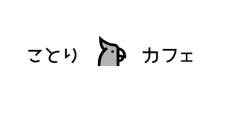

村井秀哉 Portfolio Site
about me
パーソナル情報
村井 秀哉（むらい しゅうや）
1990年1月3日生まれ / 30歳
経歴
- ・2016年3月 ： 國學院大學 文学部 史学科 卒業
- ・2016年4月 ： 大手教育業界会社 就職
- ・2020年4月 ： 大手教育業界会社 退職
入社2年10ヶ月は学習塾の校舎運営、総務部に配属され、その後法務部に配属されました。
当時、会社には様々な課題が存在していましたが、原因を突き詰めると業務効率の低さにありました。
それに対し、自分の力で改善できるものは改善していき、システムが携わるものはシステム部と連携し業務方法を改善していきました。
この経験をきっかけに、 エンジニアになることを決意しました。
未経験からエンジニアを目指す理由
前職で問題解決の提案をすることはできましたが、自分の力では解決ができないという無力さを痛感したことが未経験からエンジニアを目指す理由となりました。
前職では教育業界に勤めておりました。業界としての特徴もあり、ほぼ全ての業務がアナログでおこなわれている現状でした。その際に自分の力で効率化できる単純な作業なら問題ありませんでしたが、システムが関係してくるものだと、提案するだけで自分の力では解決できないもどかしさや無力さを痛感しておりました。
そこで、提案するだけでなく自分の力で解決したいと強く感じ、プログラミングの勉強を始めました。
学べば学ぶほど自分の思い描いたものを作ることができる可能性を実感し、そして何より、概要を考える楽しさ、設計を考える楽しさ、コードを書く楽しさ、など可能性だけでなくプログラミングに対して多くの魅力を実感しました。
そして、自分の思い描いていたシステムを作り上げるため、プログラミングの道へ進むことを決意いたしました。
今後は、知識を吸収し続け、世の中で起きている問題を解決できるシステムや、生活を豊にできるシステムを作りあげたいと考えております。
学習したプログラミングスキル
6月22日から現在まで1日も休む事なく継続して学習を続けています
- ・HTML , CSS , Haml , SCSS
- ・JavaScript , jQuery
- ・Ruby , Ruby on Rails
- ・SQL , Git , GitHub
- ・AWS
※成果物については下記参照ください
どの様な業務をしたいか
世の中に存在する課題を解決するシステムや、生活を豊かにするシステムの開発に携わりたいです。
その為に必要な言語やスキルを常に取り入れていける環境で働きたいです。
どの様なエンジニアになりたいか
1.技術力に信頼のおけるエンジニア
指定された通りにコードを書くだけでなく、自分からも提案のできるエンジニアになりたいと考えております。
そのためにはエンジニアとして信頼される必要があるので、常に新しい知識を取り入れ成長し続けるエンジニアを目指します。
2.変化をを生み進化し続けるエンジニア
既存のサービスやシステムに囚われず、時代の流れやお客様の要望に合わせて、常に進化せさるエンジニアを目指します。
そのためには、技術力だけでなく業界の流れを読む力など他の力も必要になるため、技術力の向上と並行し、多くのことを学んでいきます。
3.発信をし続けるエンジニア
未経験からの挑戦の中で得た経験や情報、スキルなどを、SNSを使用して発信していきます。
その発信により、1人でも多くの人に良い影響を与える事を目指します。
Ruby on Rails
ことりカフェ
制作したアプリへのリンク
アプリの概要
※デプロイ作業中です！9/18までには完了予定です！- ・鳥飼育者に向けに作成しました。
- ・おすすめの鳥に関する商品を紹介、共有するWEBアプリケーションです。
- ・AmazonのURL等情報を投稿時に入力する事で、自動的に商品の画像を表示します。
- ・購入ボタンをクリックすることで、自動的にAmazonの該当商品購入ページ遷移します。
ソースコード
GitHub(bird-cafe)機能概要
- ・ユーザー新規登録機能、ログイン機能、ログアウト機能（devise）
- ・トップページ（商品一覧機能）
- ・おすすめ商品投稿機能（投稿時、Amazonの商品画像を自動的に取得し表示する）
- ・商品詳細表示機能（購入ボタンをクリックするとAmazonの該当商品購入画面に遷移）
- ・商品編集機能
- ・商品削除機能
- ・いいね機能
- ・いいね数ランキング機能
- ・サイト内検索機能
- ・コメント投稿機能
こだわりポイント
- ・直感的に操作が分かるデザインかつ、鳥をイメージした可愛らしさを重視したデザインの両立
- ・WEBアプリケーションの顔となるロゴを自分でデザイン
- ・投稿時に画像を用意する必要をなくすため、Amazonの商品画像を自動的に読み込むシステムを導入
使用したGem
- ・RSpec：テストコード
- ・Devise：ユーザー管理機能
- ・rubocop
- ・Bootstrap
フリマアプリクローンサイト
制作したアプリへのリンク
アプリの概要
※デプロイ作業中です！9/18までには完了予定です！- ・フリマアプリのクローンサイトです。
- ・プログラミングスクールで作成したWEBアプリケーションです。
ソースコード
GitHub(furima_27817)機能概要
- ・ユーザー新規登録機能、ログイン機能、ログアウト機能（devise）
- ・トップページ（商品一覧機能）
- ・商品投稿機能
- ・商品詳細表示機能
- ・商品編集機能
- ・商品削除機能
- ・商品購入機能
こだわりポイント
- ・エンジニアになる将来を意識し、納期よりも早く終わらせることを目標に開発を進め、予定終了日より2週間早く開発を終えることに成功
使用したGem
- ・Devise
- ・bootsnap
- ・byebug
- ・rubocop
- ・rspec
- ・active_hash
- ・payjp
Others
Qiitaへ技術記事投稿
こだわりポイント
- ・プログラミングを学び始めて自分が必要に感じていた技術記事を投稿
- ・過去の自分に向けて記事を投稿することで、当時の自分と同じ状況の初学者のためになることを意識
- ・今後も学習した内容を積極的にアウトプット
→新しい知識をインプットしアウトプットする事を常に意識しています
Twitterへの投稿
こだわりポイント
- ・日々の学びを毎日アウトプット
- ・技術面の投稿だけでなく、プログラミング初学者の心境の変化、成長、などを投稿
- ・Qiitaと同じく過去の自分に向けて記事を投稿することで、当時の自分と同じ状況の初学者のためになることを意識